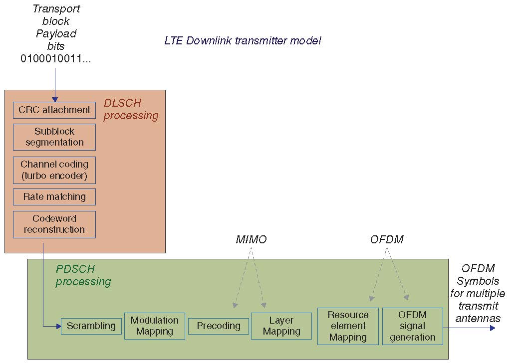

LTE笔记概述
这是一系列LTE学习笔记，包括LTE物理层信号处理流程和UE接入流程等方面的知识。由于我本身就是学通信出身，对物理层的知识掌握更多一些，所以这些博文也更多的保函一些物理层的知识。我也在努力的扩展自己的知识面，尤其工作之后发现，仅仅掌握物理层的知识是远远不够的，就像构建自己的网站一样，仅仅懂一些javascript和css前端是不够的还需要了解一些后端数据库方面的东西。工作中出了吃物理层的老本之外，我还有意扩展通信资源管理，协议设计，随机接入等方面的知识。可以说一入通信深似海，从此偷懒是路人。这些博文也是我巩固已有知识，扩展未知领域的印记。
读了《大话移动通信》,让我明白，原来通信可以这么玩儿。作者深入浅出的表述让我折服，我也想让我的博文深入浅出。与《大话移动通信》不同，这些博文侧重于阐述通信知识中的"道"-—在《大话移动通信》中，作者说：通信知识可以分两种：一种谓之"术"，一种谓之"道"。"术"层面的知识是广大运维工程师需要用到的，运维工程师根据各种通信协议（2G协议，3G协议，4G协议等等等等），叮叮当当敲着键盘，焊着单板，调试系统。在这些协议的背后蕴含着一种叫做“道”的东西，这些东西是人类智慧的结晶，它们是通信的本质，展示了数学之美。正是这些“道”和“术”让通信行业成为理论和工程完美结合的典范，在这个行业中，拉光纤的也可以说是搞通信的，写协议栈的也可以说是搞通信的，坐实验室里matlab仿真算法的也可以说是搞通信的，总之好像跟手机电脑有些关系的都可以说是搞通信的。如果你不承认，人家还有点儿不开心。《大话移动通信》侧重于“术”的讲解，我则准备重点阐述通信的“道”。不过由于自己“道”行尚浅，难免表述不准，贻笑大方。不过幸亏我脸皮厚，欢迎指点。
1 LTE物理层
可以说物理层已死，也可以说物理层还顽强的活着。说物理层已死是因为近年来逼近香农极限的技术已经出现，并且不断的出现，远的说有LDPC，Turbo等信道编码，近的说有rateless。MIMO技术也不再是什么新鲜的技术，虽然massive-mimo可能火了一把，但也是新瓶装旧酒，可以说物理层领域的新技术泛善可陈。说物理层还顽强的活着，是因为还有很多具体的问题有待解决，比如虽然Turbo码和LDPC码已经逼近了香农极限，但是这两个码可都不是省油的灯，Turbo码虽然编码简单但是译码复杂，LDPC则相反。如何设计简单易用的编译码算法看起来是个工程问题，但是其背后蕴含深奥的数学原理。截至目前，这两种信道编码的译码都采用一种叫做和积算法的译码架构，这还没有考虑并行实现。再比如，MIMO技术的引入虽然增加了空域的自由度，但是多天线带来的复杂度也是指数级别的，如何降低解MIMO的计算复杂度一直以来都是研究的热点，尤其当massive-mimo技术提出以后，将复杂度的问题日益突出。另外，貌似所提的这些搞复杂度问题都某种程度上具有一定的可并行性，所以如何设计并行算法，充分利用当前过剩的硬件计算能力也是一个挑战。总之，物理层可做的事情还很多。
通信系统的物理层包含的模块都大同小异，区别在于为了满足不同的需求所采用的技术不同，比如信道编码模块有的采用分组码，有的采用卷积码；交织模块所采用的交织算法，不同通信系统也有所不同……LTE的物理层其信号处理流程如图（\ref{fig:20150716LTEdownlink}）所示：

图 1: LTE PDSCH物理层下行链路信号处理流程
2 LTE接入